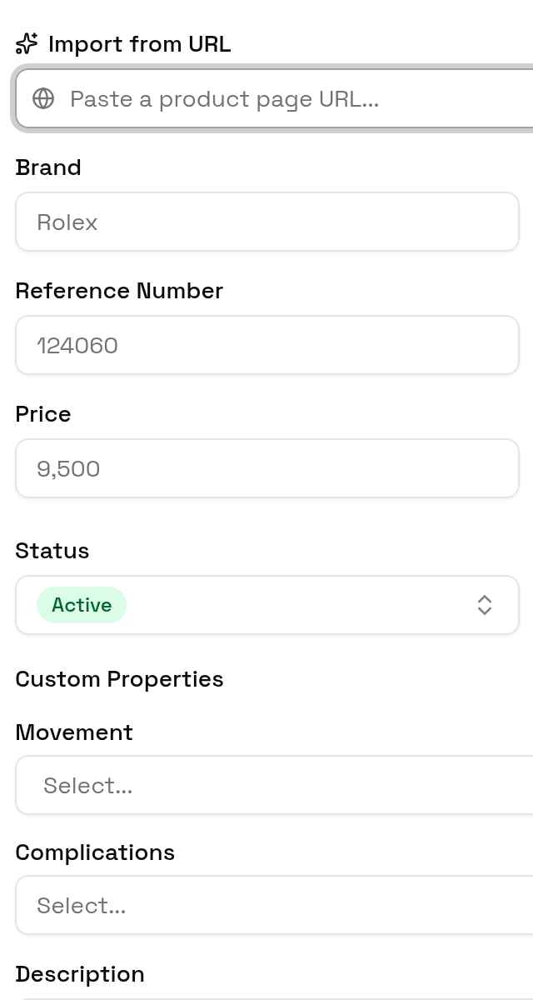
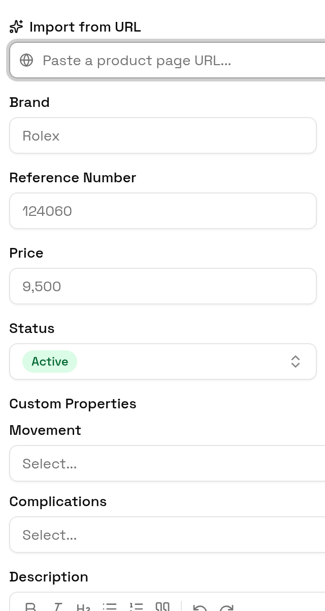
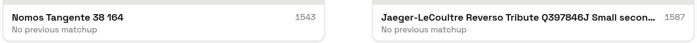
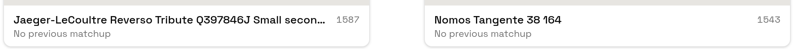

Three passes over the whole app on desktop and phone, against the seeded fixture world and the code at 624dc8e. Product checks whether what the UI says is true at a collection of thousands. Hierarchy checks what you can reach and where flows dead-end. Visual nits checks drift from the shadcn and Space Grotesk system, and those fixes are already built.
42 findings · 8 high · 18 medium · 16 low · 16 calls
Your calls
Questions only you can answer, with my recommendation marked. Overlapping findings are already folded into one call. Nothing here is built yet; the next stage turns your answers into a plan and PRs.
C1
What should “done” mean on Compare, and which watches should it draw from?
With thousands of active watches the pair count is in the millions, so the progress bar never moves and the smarter pairing rules never run.
Each watch reaches K comparisons recommended
Rankings are stable (a confidence measure)
No global goal, just a per-session counter
Leave as is
From P2, H5, P16
C2
Should Sold and Interested watches still be compared and ranked?
Compare filters on Status only, so a sold watch stays in the pool.
Only watches you own recommended
Every active watch, as now
From P16
C3
How fresh does Elo need to be after you compare?
Today scores update only after 100 new matches, re-votes never count, and Reset Matches doesn’t rescore.
After every 10 picks and on leaving Compare recommended
After every pick
Hourly, with a visible “updated” time
Leave as is
From P3
C4
Where should scraped drafts be triaged?
Drafts are hidden by the default Active filter and “N pending” opens Edit Source instead of the drafts.
A seeded Inbox view with a header count recommended
Its own /inbox page
Inside the Sources sheet
Leave as is
From P6, H4
C5
Should discarding a draft delete it or archive it?
One tap deletes a draft and its images permanently.
Archive, with Undo recommended
Delete, with Undo
Delete instantly, as now
From H8, P14
C6
What should happen right after you add a watch?
The dialog closes and the watch lands mid-list among thousands. The app has no toast system yet.
Open it and offer “Compare it now” recommended
Show a toast with View
Just close, as now
From H3
C7
Which watches can be logged as worn?
A wear for a watch that left rotation can’t be removed, and a watch in storage can’t be logged.
Any active watch, In Rotation listed first recommended
In Rotation only, as now
From P10, H11
C8
Is “Least Recently Worn” meant to favour higher Elo within a month?
No, sort strictly by last worn recommended
Yes, and rename it “Due for a wear”
Leave as is
From P15
C9
Is Value (Elo vs price) a metric you rely on?
Yen, euros and francs are all treated as dollars in Value and in the Price sort.
Yes, convert prices with a stored rate table recommended
Yes, but USD only
No, drop the column
Leave as is
From P8
C10
What should the home page lead with?
On a phone the two banners take about 190px before the first watch.
The collection, with today’s wear as a one-line chip recommended
Today’s wear and maintenance prompts, as now
From H11
C11
Is the home-screen app Compare only, or the whole app?
Installed to the home screen, every page loses its header.
Compare only, plus an “Open full app” link recommended
Whole app, with a bottom tab bar
Leave as is
From H16
C12
How should the phone toolbar fit search, filters and actions?
Opening search scrolls the page sideways and the Status filter shows as a clipped icon.
Sort & filter in a sheet, icons in an overflow menu recommended
Filters on their own row
Leave as is
From H2, H14, nits call 1
C13
What should the collection table show on a phone?
Names are cut to about 8 characters while Elo falls off screen.
Two-line rows: name, then stage · price · Elo recommended
Switch to gallery cards on phones
Leave as is
From H13, nits call 2
C14
Should status and trend colours become theme tokens?
Yes, add success/warning and status tokens
No, the raw palette is used consistently recommended
Leave as is
From nits call 3
C15
Should dialogs open with a focus ring on the first control?
Keep it, it helps keyboard users recommended
Suppress it
Leave as is
From nits call 4
C16
Are the two phone fixes in the branch the right reading?
Keep both as built recommended
N1: truncate the title instead
N2: keep the arrow, drop the number
Leave as is
From N1, N2
Product
Is every claim true, and what is a real user missing? Every claim cites the code.
P1high
A search with no matches says “No watches yet / Add your first watch”
The only empty state ignores search and filters, so a missed search reads as if the collection is gone. Show “No watches match” with Clear search and Clear filters.
Compare’s “N left” and progress bar mean nothing at scale
“N left” is every possible pair: about 4.5 million at 3,000 watches, printed unformatted, and the bar rounds to 0% all session. Random first-time pairs always win, so the upset re-check and close-Elo rules never run.
Scores update only once 100 new matches exist (re-votes are updates, so they never count) or when every pair is done. Reset Matches doesn’t rescore. A watch with no score shows 1600, “—” or nothing depending on the screen.
Sources hide when they were last scraped; deleting one wipes its history
lastScrapedAt is loaded but never shown. Delete has no confirm and cascades the seen-URL records, so re-adding a source re-scrapes everything and brings back dismissed listings.
Why stage 0’s nav-drawer and mobile Sources shots failed. Both controls work; settle() doesn’t wait for hydration.
screenshots/lib/browser.ts:122-160
Visual nits
All nine are fixed on the branch claude/project-thread-3vy3w7 (3 commits, 16 files). Typecheck and tests pass; lint shows the same 9 errors main already has. Only the light theme ships, so captures are light only.
N1med
On phones the alert title runs under its action button
Below sm the action now sits under the description. Fixed in 2bd5382.
A hidden native select picked up the space-y margin. Fixed in 57b4fb3.
components/watch-form-dialog.tsx:458-461

Now

After
N5low
Add Watch: Currency is 100px wide while every other field fills its column
Fixed in 57b4fb3.
components/watch-form-dialog.tsx:461
N6low
Add Watch: custom property labels use a different line height and gap
Fixed in 57b4fb3.
components/watch-form-dialog.tsx:611-614
N7med
Add Watch: property combobox indented 4px more, popover 220px under a 622px trigger
The popover used v3 syntax w-[--radix-popover-trigger-width], which Tailwind v4 ignores. Fixed in 57b4fb3.
components/watch-form-dialog.tsx:780,846,869
N8low
Compare cards set name and Elo differently from the rest of the app
Now font-medium name and Space Mono Elo, as everywhere else. Fixed in 57b4fb3.
components/watch-compare.tsx:207,210

Now

After
N9low
Square icon sizes written two ways
46 h-N w-N pairs became size-N. No visual change. 57af5c9.
13 files
Tooling note.npm run lint also lints the harness build output in .next-screenshots/, adding about 690 errors after any capture run. It needs an eslint ignore.
Fixture note. The seed logs a wear for today when it runs after midnight UTC, so the wear-today alert comes and goes between captures.